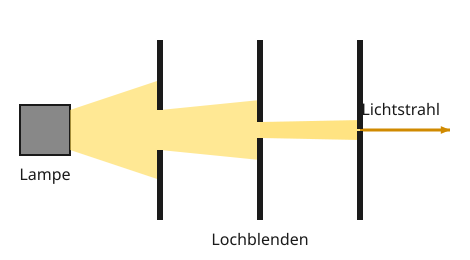

Wie sich Licht ausbreitet
Mit einem KI-Tutor lernen
Ein KI-Tutor erklärt dir diese Seite und hilft dir bei den Übungen. Wähl deinen Assistenten:
Mit Claude öffnen Mit ChatGPT öffnen Mit Mistral Vibe öffnen
Du nutzt dein eigenes Konto beim Anbieter. Der Assistent ist kein Angebot von lernapps.net: lernapps liefert nur Inhalte und Übungen. Die Wahl gilt für alle Seiten, nur auf diesem Gerät.
Kann Licht um die Ecke?
Wenn du hinter einer Hauswand stehst, kann dich die Taschenlampe deines Freundes auf der anderen Seite nicht anleuchten. Und im Kino siehst du manchmal den hellen Strahl vom Projektor zur Leinwand, aber nur, wenn Staub in der Luft ist.
Nach dieser Seite kannst du erklären, wie Licht sich ausbreitet und was ein Lichtstrahl ist. Du brauchst dafür, was du über Lichtquellen und das Sehen weißt.
Licht geht geradeaus
Eine Lichtquelle schickt Licht in alle Richtungen. Das Licht breitet sich dabei geradlinig aus: Es geht immer geradeaus, solange nichts im Weg ist. Und es ist unglaublich schnell, etwa 300 000 km pro Sekunde. Das ist in einer Sekunde mehr als siebenmal um die Erde.
Eine Experimentierleuchte hat ein Gehäuse. Das Licht kommt nur vorne heraus: Es entsteht ein Lichtbündel, auch Lichtkegel genannt. Stellt man Lochblenden davor, Scheiben mit einem Loch, wird das Bündel immer schmaler.

Hinter jeder Lochblende ist das Lichtbündel schmaler. Am Ende bleibt nur noch eine Linie.
Quelle: eigene Zeichnung. Lizenz: CC-BY-4.0.- Lichtstrahl
Ein Modell für ein unendlich schmales Lichtbündel. Man zeichnet ihn als gerade Linie mit Pfeil in Richtung des Lichts.
Einen Lichtstrahl gibt es in Wirklichkeit nicht, so schmal kann man Licht nicht machen. Er ist ein Modell: eine Vorstellung, mit der man gut zeichnen und denken kann.
Warum sieht man Licht im Nebel? Den Weg des Lichts durch klare Luft siehst du nicht, denn das Licht geht an deinem Auge vorbei. In Nebel, Rauch oder Staub schweben viele winzige Teilchen. Sie lenken ein wenig Licht zur Seite, auch in dein Auge. Dann siehst du, wo das Licht entlang geht. Das Licht selbst geht trotzdem weiter geradeaus.
Merke
Licht breitet sich geradlinig und sehr schnell aus. Ein Lichtstrahl ist ein Modell: eine Gerade mit Pfeil. Den Lichtweg siehst du nur, wenn Teilchen wie Nebel oder Staub Licht in dein Auge lenken.
Beispiel
Breites oder schmales Lichtbündel?
Zwei Strahler hängen gleich hoch. Strahler 1 hat ein Lichtbündel mit 80° Öffnung, Strahler 2 nur mit 30°.
- Strahler 1 beleuchtet eine große Fläche. Das Licht verteilt sich darauf, darum ist jede Stelle weniger hell.
- Strahler 2 beleuchtet eine kleine Fläche, dafür sehr hell.
Für ein ganzes Zimmer nimmt man eher den breiten Strahler, für ein Bild an der Wand den schmalen.
Übung
Übung
Lösung
Richtige Antwort: Die Aussage stimmt nicht.
Licht breitet sich geradlinig aus. Hinter einer Hausecke kommt kein direktes Licht an.
Mehr dazu:
Übung
Lösung
ein Modell für ein unendlich schmales Lichtbündel richtige Antwort
Man denkt sich das Lichtbündel immer schmaler, bis nur eine Linie bleibt. In Wirklichkeit gibt es das so nicht.
ein sehr helles Lichtbündel, das man im Nebel sieht
Im Nebel siehst du ein Lichtbündel, das eine Breite hat. Ein Lichtstrahl hat keine Breite.
das Licht, das vom Auge zum Gegenstand geht
Vom Auge geht kein Licht aus. Lichtstrahlen zeigen immer von der Lichtquelle weg.
Der Lichtstrahl ist ein Modell. Man zeichnet ihn als gerade Linie mit Pfeil.
Mehr dazu:
Übung
Lösung
ein Lichtbündel mit 80° Öffnung richtige Antwort
Das breite Bündel beleuchtet eine große Fläche. Dafür ist es an jeder Stelle etwas weniger hell.
ein Lichtbündel mit 30° Öffnung
Das schmale Bündel ist sehr hell, beleuchtet aber nur eine kleine Fläche. Der Rest des Raums bliebe dunkel.
Ein großer Öffnungswinkel verteilt das Licht auf eine große Fläche.
Mehr dazu:
Übung
Lösung
Richtige Antwort: 300.000 km (erlaubte Abweichung: 1.000 km)
Licht legt etwa 300 000 km pro Sekunde zurück, genau 299 792 458 m pro Sekunde.
Mehr dazu:
Offene Aufgabe
Bei Lasershows lässt man oft eine Nebelmaschine laufen. Erkläre in zwei bis vier Sätzen, warum.
Eine gute Antwort enthält:
- In klarer Luft geht das Licht am Auge vorbei, man sieht seinen Weg nicht. Nachlesen
- Die Nebelteilchen lenken etwas Licht zur Seite in die Augen der Zuschauer. Nachlesen
- So sieht man, wo das Licht entlanggeht; es geht trotzdem weiter geradeaus. Nachlesen
- Ganze Sätze mit einer Begründung (weil …, darum …). (Form)
Lösung
Ohne Nebel sieht man die Laserstrahlen in der Luft nicht, weil ihr Licht an unseren Augen vorbeigeht. Im Nebel schweben viele kleine Tröpfchen. Sie lenken ein bisschen Licht zur Seite in unsere Augen. Darum sieht man, wo die Strahlen entlanggehen, obwohl das Licht weiter geradeaus geht.